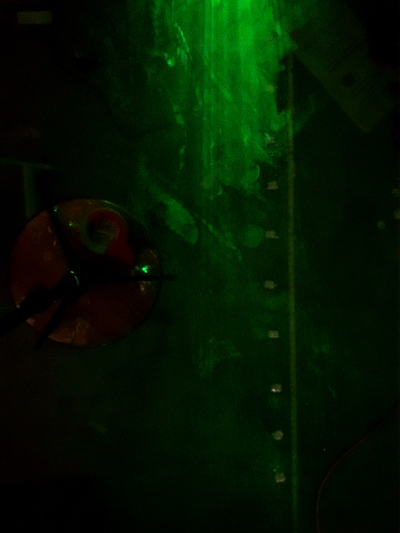

After becoming intrigued by why we stand 6 feet apart, I began gathering resources together that would help myself and others understand our cough and breath better. A study conducted by Florida Atlantic University was able to use a laser light sheet and a cough simulator to visualize the cough and how a face mask affected it. Using this as inspiriation, I created my own laser light sheet and obtained my own fog machine for experimentation. Instead of a mannequin coughing, however, it would be me. Taking all the necessary safety precautions, a setup was created where I would cough into a concentrated fog box that would then eject a cough in the form of fog. The fog was created using a 3:1 water to glycerin mixture, and the laser light sheet was obtained by using a 532nm green laser and a borosilicate glass rod. The cough was recorded by taking a long exposure image of the cough from above. The entire cough could be seen by using a tripod to put the camera at a high enough point above the vapor. The distance the cough traveled was measured in feet using markers on the ground. The microphone recording the cough was a constant 1.5 feet away from me as to give accurate cough data. Each cough sound FFT was matched with a certain size cough (in terms of density and distance traveled). Over 100 coughs were done and inputed into the database. The algorithmic part of the project that led to the prediction is explained in detail in "The Process" description. A picture of the experimentation is provided below. 
Initially, the audio input is converted into a visualization of a Fast Fourier transform (FFT) that a convolutional neural network (CNN) can then use to identify key components of the cough. Once the CNN makes a prediction on a strength (classified between 0 and 9), a multivariable linear regression algorithm predicts the image of the cough. This prediction is based on over a hundred cough images processed into a pixel array with thousands of individual comparisons. In total, the predicted image is created by a machine learning model that has gone through over a million total comparisons. Once the prediction is complete, each individual pixel's HSB color value is used to identify key components of the cough. Values below a certain threshold are cut out to distinguish the cough from the rest of the image, and border pixels were used to calculate the cough's breadth and length. The higher the pixel value, the more dense and larger the particles in that pixel are, which is used to calculate the regions within a cough that are more likely to transmit the virus and/or bacteria.
The correlation with the chance of getting the virus is based off of a study by the medical journal The Lancet. The Lancet is known as one of the world's oldest, best-known, and comprehensive peer-reviewed general medical journals. They state "The primary limitation of our study is that all studies were non-randomised, not always fully adjusted, and might suffer from recall and measurement bias (eg, direct contact in some studies might not be measuring near distance). However, unadjusted, adjusted, frequentist, and Bayesian meta-analyses all supported the main findings, and large or very large effects were recorded. Nevertheless, we are cautious not to be overly certain in the precise quantitative estimates of effects, although the qualitative effect and direction is probably of high certainty." Thus, while the data is not perfect by any means, it provides a good baseline to estimate the chance of getting the virus. From their findings, they estimate that within 1 meter in distance between two people, there is around a 13% risk of being infected. This risk decreases greatly at 2 meters and 3 meters away, being in the low single digits. The Lancet provides a useful graph illustrating their findings. My algorithm takes their risk findings and relates it with particle density, with particles about a certain threshold having a specified infection rate. Using the pixel values to evaluate the density, I was able to create an algorithm that matches closely with the research from The Lancet. The algorithm was created so that it recognizes that a person has around a 13% infection rate at 1 meter away, and a drastic reduction as the distance increases. I found remarkable similarities between the graphs provided by The Lancet and mine, affirming the idea that density is an adequate method of finding the infection rate of the virus at various distances.
The correlation with the chance of getting the virus and exposure time is based off a study by the University of the Philippines College of Medicine. Their study measured the time people were exposed to the virus and compared it to the number of newly infected people. The data used in my calculations was based on the exposure of talking to just one person, but the study also includes an 'encounter' value that could factor in the exposure of more than one person. The percent chance of being infected was based off of the fraction of one new infection in the graphs provided within the study.
Awareness. We need to be aware of our actions and how they can affect other people. While there are countless studies and simulations published by major news sources and large research journals, none can directly impact on an individual level. We may not think we play a large role in the spread of the virus and we may not want to take social distancing rules seriously, but I hope this site can show its importance and answer the question: Why do we stand 6 feet apart?
I am a 17 year old who was looking for something to do over the summer.
All of the code began from scratch. The website was created using tools from Bootstrap and JQuery without the usage of pre-made templates. Javscript, CSS, and HTML were used to construct the website. The machine learning was coded using Tensorflow.js without the use of pre-existing models. All of the over one thousand models were created from my algorithm. I learned the optimal machine learning algorithm by testing MNIST data. p5.js was used for the Fast Fourier transform canvas. Node.js was used for server-side programming, alongside Express.js. The NeDB node package manager was used to create a database to hold all the cough data. Lastly, Chart.js was used to create the charts shown throughout the site.
Project Hours Over the Summer: 106 Hours
Experimentation Hours: 21 Hours
Project Hours During School: 158 Hours
Learning Hours: 70 Hours
Total Hours : 355 Hours
The Fluid Simulator utilized much of the code from Pavel Dobryakov's fluid simulation, but was optimized to match with the approximate size, shape, and strength of a specified cough provided by the user. Credit goes to him for creating the simulation.
Copyright (c) 2020 by Pavel Dobryakov ( https://codepen.io/PavelDoGreat/pen/zdWzEL )
Permission is hereby granted, free of charge, to any person obtaining a copy of this software and associated documentation files (the "Software"), to deal in the Software without restriction, including without limitation the rights to use, copy, modify, merge, publish, distribute, sublicense, and/or sell copies of the Software, and to permit persons to whom the Software is furnished to do so, subject to the following conditions:
These 4 graphs illustrate the trends identified in the cough algorithm. "Cough strength" is measured by the size and shape of your audio input. The chance of getting the virus was found by comparing data from scientific studies with the different components of the cough. The chance measured is within the first five minutes, which is relatively short exposure.